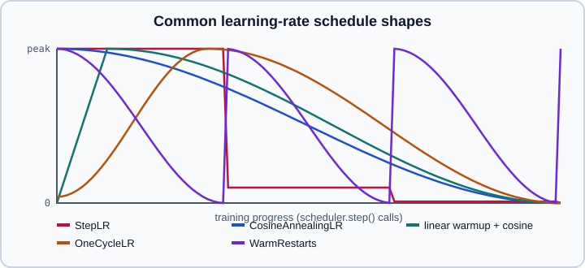

Learning-Rate Schedulers & SWA/EMA
|
This content was generated with the assistance of AI and should be verified against the official documentation before being relied on in production. |
The learning rate is usually the most influential hyperparameter, and almost every modern recipe changes it during training: a short warmup, then a decay. torch.optim.lr_scheduler provides schedulers that rewrite the lr of an optimizer’s parameter groups, and torch.optim.swa_utils provides weight averaging (SWA and EMA) that smooths the final weights. The concepts (warmup, cosine decay, one-cycle, why averaging helps) are in Optimizers & Learning-Rate Schedules and Deep Learning Tuning Playbook; the optimizer API itself is in Optimizers.
Examples were run on Python 3.13 with PyTorch 2.15 (CPU) on 2026-10-31. The constructor defaults in the table match the 2.15 signatures.
The schedulers
The 2.15 reference groups them as follows:
-
base class:
LRScheduler -
simple decay:
StepLR,MultiStepLR,ExponentialLR,PolynomialLR -
multiplicative or constant factors:
LambdaLR,MultiplicativeLR,ConstantLR,LinearLR -
cosine and cyclic:
CosineAnnealingLR,CosineAnnealingWarmRestarts,CyclicLR,OneCycleLR -
metric-driven:
ReduceLROnPlateau -
combinations:
ChainedScheduler,SequentialLR

The figure is an original sketch of the shapes with typical settings (not output copied from the documentation); exact values depend on the arguments.
| Scheduler | Behaviour | Notes |
|---|---|---|
|
Multiply the rate by |
Classic CNN recipes. |
|
Decay at listed epochs. |
Precise control. |
|
Multiply by |
Smooth decay. |
|
Half cosine from the initial rate down to |
Default decay for transformers. Continues to oscillate if stepped beyond |
|
Cosine cycles that restart; cycle length multiplied by |
SGDR-style training. |
|
Linear ramp of a multiplicative factor. Defaults are a start factor of one third, end factor 1.0, five iterations. |
Warmup. |
|
Scale by a constant factor for a number of iterations. |
Short, flat warmup. |
|
Rate equals initial rate times a function of the step. |
Anything custom; the function receives the step index. |
|
Ramp up to |
Fast convergence ("super-convergence"). Step it every batch. |
|
Triangular or exponential cycles between two bounds. |
Learning-rate range tests. |
|
Reduce when a monitored metric stops improving. |
|
Call order and the step granularity
import torch
from torch import nn
model = nn.Linear(10, 2)
optimizer = torch.optim.SGD(model.parameters(), lr=0.1, momentum=0.9)
scheduler = torch.optim.lr_scheduler.StepLR(optimizer, step_size=30, gamma=0.1)
for epoch in range(100):
for x, y in [(torch.randn(8, 10), torch.randint(0, 2, (8,)))] * 5:
optimizer.zero_grad()
nn.functional.cross_entropy(model(x), y).backward()
optimizer.step() # first
scheduler.step() # then the scheduler, once per epoch for StepLR
print(epoch, scheduler.get_last_lr())-
scheduler.step()goes afteroptimizer.step(). Before PyTorch 1.1 the order was reversed; with the wrong order today the first value of the schedule is skipped and PyTorch warns. -
The unit of a scheduler’s counter is whatever you step it on. Epoch-based schedulers (
StepLR) are stepped per epoch; per-iteration schedules (OneCycleLR,CyclicLR, warmup, cosine decay defined in steps) are stepped per batch. PassT_maxortotal_stepsin the same unit. -
OneCycleLRneeds eithertotal_stepsor bothepochsandsteps_per_epoch. Stepping it more times than that raises an error. -
get_last_lr()returns the current rates per parameter group; use it for logging instead of reading the optimizer. -
Constructing a scheduler sets the initial learning rate in the optimizer groups (and stores
initial_lr), so create the scheduler after the optimizer and before resuming. When resuming, callload_state_dicton the optimizer after creating the scheduler (see Optimizers). -
ReduceLROnPlateauis the exception: it needs the monitored value,scheduler.step(val_loss), once per validation. -
If the optimizer was not stepped (for example
GradScalerskipped the step because of inf gradients) PyTorch may warn thatlr_scheduler.step()was called beforeoptimizer.step(); this is harmless for an occasional skipped first step.
Warmup followed by decay
Large learning rates early in training are unstable, so recipes warm up linearly and then decay. Combine schedulers with SequentialLR (one after another, switching at milestones) or ChainedScheduler (all applied together, multiplying their effects).
import torch
from torch import nn
from torch.optim.lr_scheduler import LinearLR, CosineAnnealingLR, SequentialLR
model = nn.Linear(16, 4)
optimizer = torch.optim.AdamW(model.parameters(), lr=3e-4, weight_decay=0.1)
total_steps, warmup_steps = 10_000, 500
warmup = LinearLR(optimizer, start_factor=1e-3, end_factor=1.0, total_iters=warmup_steps)
decay = CosineAnnealingLR(optimizer, T_max=total_steps - warmup_steps, eta_min=3e-5)
scheduler = SequentialLR(optimizer, schedulers=[warmup, decay], milestones=[warmup_steps])
for step in range(total_steps):
optimizer.step() # forward and backward omitted
scheduler.step()
if step in (0, warmup_steps - 1, warmup_steps, total_steps - 1):
print(step, scheduler.get_last_lr())A single LambdaLR is a compact alternative and is easy to unit test because the schedule is a pure function:
import math
import torch
def warmup_cosine(step, warmup=500, total=10_000, min_ratio=0.1):
if step < warmup:
return (step + 1) / warmup
progress = (step - warmup) / max(1, total - warmup)
return min_ratio + (1 - min_ratio) * 0.5 * (1 + math.cos(math.pi * progress))
model = torch.nn.Linear(4, 2)
optimizer = torch.optim.AdamW(model.parameters(), lr=3e-4)
scheduler = torch.optim.lr_scheduler.LambdaLR(optimizer, lr_lambda=warmup_cosine)OneCycleLR and ReduceLROnPlateau
import torch
from torch import nn
model = nn.Linear(10, 2)
steps_per_epoch, epochs = 100, 10
optimizer = torch.optim.SGD(model.parameters(), lr=0.01, momentum=0.9)
onecycle = torch.optim.lr_scheduler.OneCycleLR(
optimizer, max_lr=0.1, epochs=epochs, steps_per_epoch=steps_per_epoch,
pct_start=0.3, anneal_strategy="cos",
)
# per batch: optimizer.step(); onecycle.step()
optimizer2 = torch.optim.SGD(model.parameters(), lr=0.1, momentum=0.9)
plateau = torch.optim.lr_scheduler.ReduceLROnPlateau(optimizer2, mode="min", factor=0.5, patience=3)
for epoch in range(20):
val_loss = 1.0 / (epoch + 1) # stand-in for a real validation loss
plateau.step(val_loss) # per epoch, with the metricSource: https://docs.pytorch.org/docs/stable/generated/torch.optim.lr_scheduler.ReduceLROnPlateau.html
OneCycleLR cycles momentum (or Adam’s beta1) inversely to the learning rate when cycle_momentum=True; with an optimizer without a momentum or betas entry it raises an error, so pass cycle_momentum=False for those. Because it overrides the optimizer’s lr, the lr passed to the optimizer constructor is not what training uses.
Stochastic weight averaging and EMA
torch.optim.swa_utils provides:
-
AveragedModel(model, device=None, avg_fn=None, multi_avg_fn=None, use_buffers=False): keeps an averaged copy of the weights. With no function it is an equal-weight running average (SWA). Withmulti_avg_fn=get_ema_multi_avg_fn(decay)it becomes an exponential moving average. Callupdate_parameters(model)afteroptimizer.step(); the first call copies the weights. The averaging functions are not saved in the model’sstate_dict. -
get_ema_multi_avg_fn(decay=0.999),get_ema_avg_fn,get_swa_avg_fn,get_swa_multi_avg_fn: ready-made update rules. The reference recommends a decay close to 1.0 because smaller values can hurt convergence. -
SWALR(optimizer, swa_lr, anneal_epochs=..., anneal_strategy=...): anneals the rate to a fixed SWA value and then holds it.anneal_strategyis"linear"or"cos". -
update_bn(loader, model, device=None): one pass over the data to recompute batch-norm statistics for the averaged weights. Each batch must be a tensor, or a list or tuple whose first element is the input tensor. The alternative isuse_buffers=True, which averages the buffers while updating parameters; test which works better for your model.
Averaged weights have not been seen by the batch-norm running statistics, which is the reason for update_bn after SWA. Layer-norm models need no such step.
import torch
from torch import nn
from torch.optim.swa_utils import AveragedModel, SWALR, update_bn, get_ema_multi_avg_fn
model = nn.Sequential(nn.Linear(10, 32), nn.BatchNorm1d(32), nn.ReLU(), nn.Linear(32, 2))
loader = [(torch.randn(16, 10), torch.randint(0, 2, (16,))) for _ in range(20)]
optimizer = torch.optim.SGD(model.parameters(), lr=0.05, momentum=0.9)
scheduler = torch.optim.lr_scheduler.CosineAnnealingLR(optimizer, T_max=100)
swa_model = AveragedModel(model)
swa_scheduler = SWALR(optimizer, swa_lr=0.02, anneal_epochs=5, anneal_strategy="linear")
swa_start = 60
for epoch in range(100):
for x, y in loader:
optimizer.zero_grad()
nn.functional.cross_entropy(model(x), y).backward()
optimizer.step()
if epoch >= swa_start:
swa_model.update_parameters(model)
swa_scheduler.step()
else:
scheduler.step()
update_bn(loader, swa_model) # recompute BatchNorm statistics once at the end
swa_model.eval()
with torch.no_grad():
logits = swa_model(torch.randn(4, 10))
# Exponential moving average, kept alongside training and used for evaluation
ema_model = AveragedModel(model, multi_avg_fn=get_ema_multi_avg_fn(0.999), use_buffers=True)
# after every optimizer.step(): ema_model.update_parameters(model)AveragedModel wraps the model: call swa_model(x), and reach the original module through swa_model.module. Evaluate with the averaged model, save it separately from the raw weights, and for distributed training build it from the unwrapped module.
Practical advice
-
Log the learning rate every step during the first runs of a new schedule; a flat or exploding curve is the quickest diagnosis of a stepping bug.
-
Define schedules in steps, not epochs, when the dataset size or batch size can change (see Datasets & DataLoader for
len(loader)). -
Scale the peak learning rate with the batch size cautiously; the rules of thumb are in Deep Learning Tuning Playbook.
-
With gradient accumulation count scheduler steps per optimizer step, not per micro-batch.
-
Include the scheduler in checkpoints (
scheduler.state_dict()); otherwise a resumed run restarts the warmup.